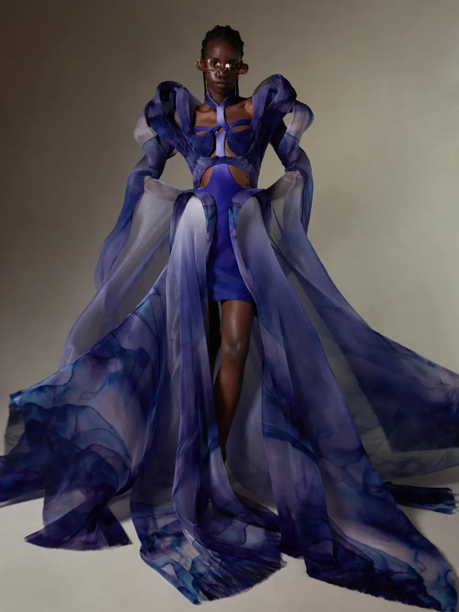

Research & industry examples
Three collections, read as regalia
None of these was made as ritual dress. Each is a speculative reading of how its ideas could serve one.
Ceremonial clothing for imagined societies: how might people who don't exist yet dress their beliefs, hierarchies and ceremonies?

Unlike science-fiction costume, the clothing has to carry a coherent cultural story. It is best treated as a proposed design framework, not an established movement.
Clothing has always meant more than protection. Coronation robes, wedding attire, religious vestments and ritual ornaments turn the body into a visible expression of values. Fashion can be read as material culture: a garment's meaning depends on how it is designed, presented and worn (Crane and Bovone, 2006).
None of these was made as ritual dress. Each is a speculative reading of how its ideas could serve one.
World-building gives a designer a reason to connect form, ornament and material to purpose. Choose what an imagined society holds sacred.
Technical novelty does not automatically create meaningful design. Open each lens.
Each visual decision should belong to the imagined society's system of meaning. Symbolism needs research and coherence: sacred motifs are not interchangeable decoration, and studying existing traditions is different from inventing new symbolic systems.
3D printing, digital textiles, photochromic surfaces and sculptural construction widen what ceremonial dress can be. But electronics need batteries and maintenance, rigid structures restrict movement, and embellishment adds weight, cost and end-of-life complexity. Garments still have to walk, dance and stand for hours.
Couture, performance costume, film and immersive exhibitions are the natural homes, but the principles can reach modular accessories, transformable clothing and detachable ornaments. Sustainability must be judged across production, use, repair and disposal: durable, repairable, reusable and easy to take apart.
Borrowing sacred motifs without understanding them reduces living traditions to decoration. Research, attribution and consultation are essential. A speculative society should develop its own coherent symbolism rather than combine recognisable cultural references.
I would design for a civilisation that sees humans as temporary participants in a larger cosmic ecosystem: spine-like structures, shell-inspired surfaces and translucent elements that evoke water or celestial movement, with detachable ornaments marking different ceremonies.
“What might future societies choose to celebrate, protect, remember and believe in?”
A hair pin, a ring and a pair of drop earrings, drawn from Casa Batlló and the Art Nouveau period. Drag to turn a piece, scroll or pinch to zoom.
Keep scrolling: each piece leaves the screen and settles where it is worn, on a hand, an ear and in the hair.
Worn photographs are AI-generated visualisations (ring) and concept frames turned black and white, with my 3D renders placed on them.
Earthrise, Invisible and SILENT are not a formal Future Ritualism movement, but they are credible starting points. The direction's potential depends on uniting imaginative aesthetics with coherent symbolism, practical construction, cultural awareness and responsible material choices.
Collection images belong to Iris van Herpen, Anrealage and Yuima Nakazato and appear as research references.